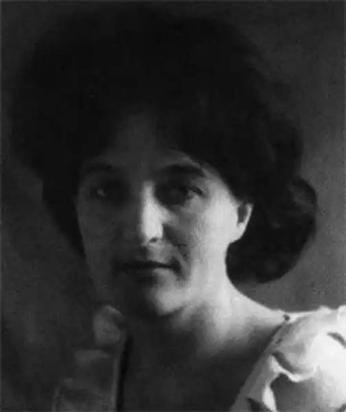

Федоровська Лада Костянтинівна народилася 18 березня 1934 року в с. Ясна Поляна Московської області.
Закінчила філологічний факультет Київського університету. Працює переважно в галузі літературної критики, знана в літературному колі України. Вона "критик по-справжньому проникливий і своєрідний, з власною думкою і власним почерком, у міру колючий і в міру доброзичливий, протягом десятка років добре знаний читачами" (А. Погрібний).
Поетичне творення для Л. Федоровської є справою новою. Збіркою поезій "Мое поднебесье" дебютувала у 1998 році. Віршам Л.К. Федоровської притаманні визначеність почуттів, чіткість пейзажного малюнку, широта узагальнень, наснаженість бунтівним пафосом. Як каже Я. Голобородько, – "Л. Федоровська виступає як "постнеокласик" в сучасній поетичній культурі". Оприлюднює публікації громадського звучання, рецензії на твори не лише місцевих авторів. Л.К. Федоровська – редактор газети "Кафедра" Херсонського державного університету та академічного ліцею при ХДУ, на громадських засадах керує літературною вітальнею при Херсонській обласній універсальній науковій бібліотеці імені Олеся Гончара Федоровська Лада Костянтинівна – член Національної спілки письменників. Авторка книжок "Утвердження правди" (1978), "Романи Юрія Мушкетика. Літературно-критичний нарис" (1982), "По-земному – про високе" (1985); поетичних збірок "Мое поднебесье" (1998), "И на цветке я присягну..." (2000), "Под поздней луной" (2002), "Соцветья" (2006). Поезії Лади Костянтинівни друкувалися в різноманітних періодичних виданнях ("Джерела", "Кафедра", "Наддніпрянська правда"), альманахах "Степ", збірниках херсонських авторів ("25. Антологія творів херсонських авторів", "Таврія поетична" та ін.). Лада Костянтинівна – лауреат літературних премій ім. Б. Грінченка (2008) та ім. В. Сосюри (2004) за вагомий внесок у розвиток літературного процесу в Україні. Федоровська Лада Костянтинівна – член Національної спілки журналістів України, член Національної спілки письменників України з 1976 року, очолювала Херсонську обласну організацію Всеукраїнської творчої спілки "Конгрес літераторів України". Поетеса Лада Федоровська пішла з життя 5 листопада 2020 року.